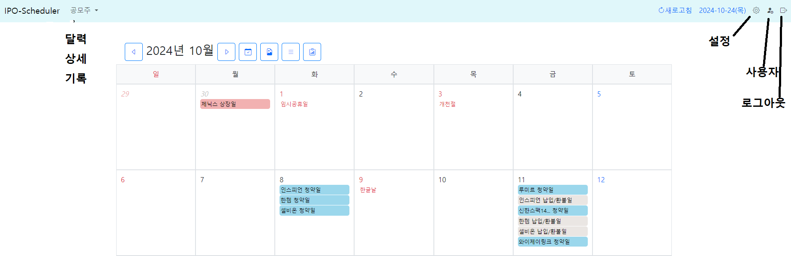

개요
- 공모주 일정을 매일 38커뮤니케이션 사이트에서 Scraping하여 데이터를 저장하고, 사용자가 조회할 수 있도록 하는 웹사이트입니다
- 가져온 데이터를 달력과 박스형태로 표현합니다
- 최고예상체결가를 산정합니다(현재는 공식으로 산정. 추후 인공지능기법으로 구현할 예정임)
- 지난 데이터 즉 현재가 10월이라면 8월이나 9월초의 데이터는 삭제합니다.
사용법
1. 접속 및 로그인
2. Top 메뉴

- 공모주
- 상세 : 각 공모주에 대한 상세한 내용을 박스형태로 표현
- 달력 : 공모주일정을 달력으로 표현
- 기록 : 예상체결가를 구하기 위해서
- 설정
- 예상체결가공식, 사이트38 스크랩최종시각
- 스케줄러(cron) 설정 시각
- 사용자
- 로그아웃
- 공모주메뉴 즉 공모주-상세, 공모주-달력만 사용하면 됨.
- 종료시 로그아웃버튼 클릭, 일정시간 후 자동로그아웃 됨
- 공모주기록, 설정, 사용자 메뉴는 사용할 필요 없음
3. 공모주-달력
- 달력에서 공모주일정을 확인할 수 있음
- 달력의 회사명을 클릭하면 38커뮤니케이션이 제공하는 그 회사의 상세화면으로 이동
- 이미지 저장을 클릭하면 현재 달력을 이미지 파일로 저장할 수 있음
4. 공모주-목록
- 각 공모주의 상세 내용을 박스형태로 보여줌
- 회사명 검색: 회사명의 글자 일부를 입력함으로써 해당 회사만 표시
- 주관증권사별로 검색
5. 동작방법
- 매일 정해진 시간(설정메뉴)에 38커뮤니케이션 사이트에서 공모주관련 데이터를 Scraping함
- Scraping한 시각은 공모주-상세에서 확인가능
- 과거데이터는 삭제함 즉 현재가 10월이면 이전 월의 데이터는 사라짐.(공모가 끝난 데이터는 불필요한 데이터로 생각함)